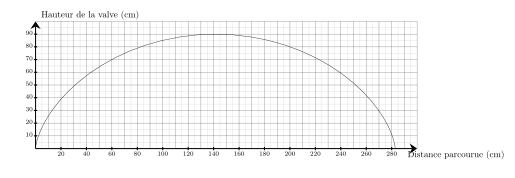
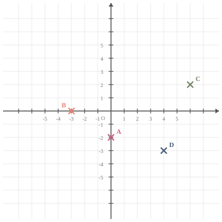

Béatrice a repéré, à l'épicerie, des melons qui l'intéressent.
Elle lit que $6$ melons coûtent $12{,}60$ €. Elle veut en acheter $13$.
Combien va-t-elle dépenser ?
Commençons par trouver le prix d'un seul melon. Si $6$ melons coûtent $12{,}60$ €, alors un seul melon coûte ${\color{#216D9A}\boldsymbol{6}}$ fois moins cher. $12{,}60$ € $ \div {\color{#216D9A}\boldsymbol{6}} = 2{,}10 $ € un seul melon coûte ${\color{#216D9A}\boldsymbol{2{,}10}}$ €. Cherchons maintenant le prix de $13$ melons. $13$ melons, c'est ${\color{#216D9A}\boldsymbol{13}}$ fois plus qu'un seul melon. $13$ melons coûtent donc ${\color{#216D9A}\boldsymbol{13}}$ fois plus que ${\color{blue}\boldsymbol{2{,}10}}$ €, le prix d'un seul melon. ${\color{#216D9A}\boldsymbol{2{,}10}}$ € $\times {\color{#216D9A}\boldsymbol{13}} = 27{,}30$ € $13$ melons coûtent ${\color{#F15929}\boldsymbol{27{,}30}}$ €.
Exercice 3
Calculer le volume d'une pyramide de hauteur $6\text{ m}$ et dont la base est un triangle. La base du triangle mesure $3\text{ m}$ et la hauteur associée à cette base mesure $2\text{ m}$.
On a réalisé $1000$ lancers d’un dé à $4$ faces.
Les résultats sont inscrits dans le tableau ci‑dessous.
$$
\def\arraystretch{1.5}
\begin{array}{|c|c|c|c|c|}
\hline
\text{Scores} & 1 & 2 & 3 & 4 \\
\hline
\text{Nombre d'apparitions} & 238 & 245 & 261 & 256 \\
\hline
\end{array}
$$
Calculer la fréquence de la valeur $4$.
La valeur $4$ apparaît $256$ fois.
Le nombre total de lancers est $1\,000$.
La fréquence de la valeur $4$ est ${\color{#F15929}\boldsymbol{\dfrac{256}{1\,000}}}={\color{#F15929}\boldsymbol{0{,}256}}$, soit $25{,}6\thickspace\%$.
Séance 20
Exercice 1
Quel est le carré de $14$ ?
Le carré d'un nombre est ce nombre multiplié par lui-même : $14\times14=196$
Exercice 2
Sur le graphique ci-dessus, on a représenté la hauteur de la valve d'une roue de vélo en fonction de la distance parcourue en $\text{cm}$ lors d'un tour complet. Quelle est la hauteur de la valve lorsque la distance parcourue est de $155\text{ cm}$ ?

La hauteur de la valve lorsque la distance parcourue est de $155\text{ cm}$ est de $89\text{ cm}$.
On donne la série statistique suivante :
$20$ ; $16$ ; $10$ ; $4$ ; $19$.
Parmi ces propositions, laquelle peut être la médiane de la série ?
A. $10$ B. $11$ C. $19$ D. $16$
La série triée dans l'ordre croissant est : $4$ ; $10$ ; $16$ ; $19$ ; $20$.
La série comporte $5$ valeurs, qui est un nombre impair, donc la médiane est le terme de rang $3$.
La médiane est donc $16$.
La bonne réponse est la réponse D.
Séance 21
Exercice 1
Calculer $\dfrac{1}{2} \text{ de } 140 \text{ L}$.
$\dfrac{1}{2}$ de $140$ L = ${\color{#F15929}\boldsymbol{70}}$ L
Mentalement :
Prendre $\dfrac{1}{2}$ d'une quantité revient à la diviser par $2$.
Ainsi, $\dfrac{1}{2}$ de $140=140\div 2=70$.
Placer les points suivants : $A(0\;;\;-2)$ ; $B(-3\;;\;0)$ ; $C(6\;;\;2)$ et $D(4\;;\;-3)$.
Les points sont placés aux coordonnées indiquées :

Exercice 4
Une élève souhaite réaliser un programme pour dessiner un triangle équilatéral.
Par quelles valeurs doit-elle compléter les lignes 3 et 5 ?
Pour obtenir un triangle équilatéral, il faut répéter ${\color{#F15929}\mathbf{3}}$ fois
et tourner de $\dfrac{360}{3} = {\color{#F15929}\mathbf{120}}$ degrés.